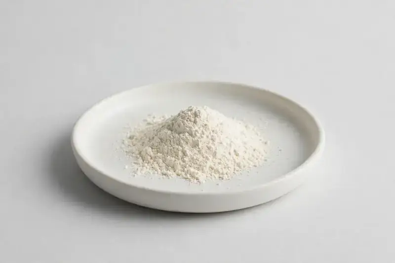

Malus domestica — a fermented apple powder positioned for metabolic wellness and functional formulations.

Overview
Apple Cider Vinegar Powder is produced from fermented Malus domestica and is typically standardized to acetic acid. It has become a popular ingredient in metabolic wellness and daily supplement concepts, often in capsule and gummy formats. As a Xi'an-based trading company sourcing through vetted partner producers, we align acetic acid content, carrier and format with your target specification.
Specifications below reflect commonly requested options in the market — not a stock list. Share your target spec and we'll confirm exactly what we can supply, honestly.
| Specification | Details |
|---|---|
| Botanical identity | Malus domestica, fermented |
| Marker compound | Acetic acid — commonly requested: 5-10% (titration) |
| Appearance | Off-white to light cream fine powder |
| Analytical methods | Methods referenced in buyer specifications: titration |
| Mesh size | Typically 80–100 mesh (confirm per inquiry) |
| Testing | COA/TDS arranged on request; scope agreed per your spec |
Applications
Documentation
We don't claim in-house labs or certifications we don't hold. COA and TDS documents can be arranged on request, and testing scope is agreed against your specification before supply.
FAQ
Related products
Polygonum cuspidatum
Key marker: Trans-Resveratrol
View specs →Vitex agnus-castus
Key marker: Agnuside
View specs →Epimedium sagittatum
Key marker: Icariin
View specs →Ocimum tenuiflorum
Key marker: Ursolic Acid
View specs →Melissa officinalis
Key marker: Rosmarinic Acid
View specs →Send your target spec and volumes — we'll respond with a tailored quotation.
Request a Quote